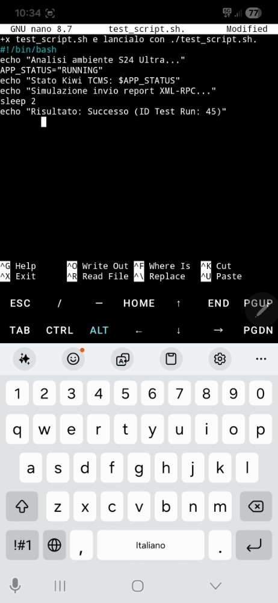

Automated Testing Environment with Docker & Bash
Logic developed and validated on Android (S24 Ultra) via Termux to ensure cross-platform compatibility.

Containerized environment for Kiwi TCMS and PostgreSQL.
La soluzione garantisce la persistenza dei dati e la replicabilità dell'ambiente di test.